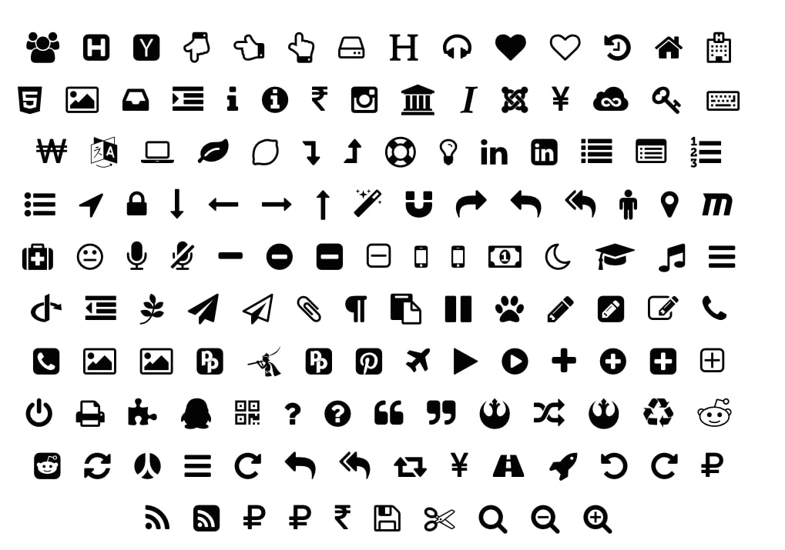

ggpop is an R package built on top of ggplot2 that simplifies the creation of engaging, icon-based population charts. By combining features from ggplot2 and ggimage, ggpop lets users easily visualize population data using proportional, customizable icons arranged in intuitive, circular layouts. The package also includes functionality for adding clear, icon-enhanced captions, which makes charts easier to understand and visually attractive. Designed primarily for visual storytelling, ggpop helps users communicate complex population statistics in a straightforward and appealing manner.
An Alternative Approach to Visualization
ggpop offers a fresh alternative to traditional data visualizations by using icons and proportional symbols in population charts. This approach not only improves the aesthetics of your plots but also helps your audience better engage with and understand the data. By converting numerical values into intuitive visual representations, ggpop makes complex population data clearer and easier to remember, allowing users to tell more compelling and accessible stories.
Why ggpop?
Traditional charts can feel abstract. ggpop makes data human by:
- Visual Impact: Icons create immediate connection
- Intuitive Understanding: Proportional representation simplifies complex data
- Flexible: Support for 2,000+ Font Awesome icons + native optimized icons
- Fast: Optimized rendering handles up to 1,000 icons smoothly
- ggplot2 Native: Integrates seamlessly with your existing workflow
Installation
You can install ggpop from CRAN with:
install.packages("ggpop")Development version of the package can be installed from GitHub with:
install.packages("remotes")
remotes::install_github("jurjoroa/ggpop")Quick Start
1.- Create a Small Dataset or Use a Built-in Dataset
The dataset df_pop_mx is a minimal example illustrating population counts by sex in Mexico in 2024. It has the following structure:
-
sex:
A categorical variable indicating the sex, with two entries:"male""female"
n:
A numeric variable representing the population size for each sex category.country:
A constant value"Mexico", indicating the country these observations belong to.continent:
A constant value"America", indicating the continent these observations belong to.
library(dplyr)
library(ggpop)
df_pop_mx <- data.frame(sex = c("male", "female"),
n = c(63459580, 67401427),
country = "Mexico",
continent = "America")| Sex | Population (n) | Country | Continent |
|---|---|---|---|
| Male | 63,459,580 | Mexico | America |
| Female | 67,401,427 | Mexico | America |
2.- Process data
df_pop_mx_prop <- process_data(data = df_pop_mx, group_var = sex, sum_var = n, sample_size = 1000)
head(df_pop_mx_prop)We apply the process_data() function to the population data df_pop_mx with the following parameters:
- group_var = sex: groups the data by sex (male/female). This is our grouping variable
-
sum_var = n: uses the column
n(population counts) for group totals. This is the variable that will be summed up to calculate proportions. - sample_size = 1000: generates 1,000 sampled records, proportionally allocated to each group. The package allows up to a sample size of 1000.
The function calculates group proportions, then performs sampling to create a new data frame (df_pop_mx_prop). Each row represents one draw from the 1,000 samples. Notable columns:
- type: which group (male or female) was sampled.
- n: total population count of the corresponding group.
- prop: proportion of that group in the overall dataset.
3.- Assign icons to groups
Here, we create a new column called icon in the df_pop_mx_prop dataset. The case_when() function checks each row’s type (either “male” or “female”) and assigns a matching value (“ggmale” or “ggfemale”) to the icon column.
4.- Icons

This package supports Font Awesome icons.
Font Awesome icons offer greater flexibility and a broader icon set (2,000+ free icons). However, rendering these icons can be slower if the sample size is large (e.g., 1,000+ observations) or if plot is faceted.
The icons are stored in the
fontawesomepackage. The only thing you need to specify is the icon’s name.
For example, this is just a few sample of more than 2,000 free icons available in the fontawesome package:
| List of Font Awesome icons | Preview |
|---|---|
|
Sample icons: - home - user - envelope - bell - camera - cog - heart - calendar - cart-plus - check - cloud - comment - comments - download - edit - file - filter - flag - folder - phone |
 |
You can check the full list of icons in the Font Awesome website.
5.- Plot population chart
Now we can proceed to plot the population chart using the assigned icons.
library(ggplot2)
ggplot() +
geom_pop(data = df_pop_mx_prop, aes(icon = icon, group=type, color=type),
size = 1, arrange=F, legend_icons=F) +
theme_void() +
theme(legend.position = "bottom")
The geom_pop() function creates a population chart using the df_prop_mx_f dataset. The object work as a geom_point() figure plotted by determined x and y coordinates. We can also group and color the icons by the type variable or the variable that we are grouping for.
5.1 Improve plot
Like a ggplot object, we can improve it to have a more presentable plot. We can arrange our icons, add them as part of the legend, give color to the background, and add a title and caption to the plot.
ggplot() +
geom_pop(data = df_pop_mx_prop, aes(icon = icon, group=type, color=type),
size = 1, arrange=T) +
scale_legend_icon() + #add icon to the legend
theme_void(base_size = 40) +
theme(legend.position = "bottom") +
labs(title = "Population in Mexico by Sex",
subtitle = "2024",
caption = "Source: demogmx") +
theme(legend.title = element_blank(),
plot.background = element_rect(fill = "black"),
panel.background = element_rect(fill = "black"),
legend.background = element_rect(fill = "black"),
legend.text = element_text(color = "white"),
plot.title = element_text(color = "white"),
plot.subtitle = element_text(color = "white"),
plot.caption = element_text(color = "white")) +
scale_color_manual(values = c("male" = "#1E88E5", "female" = "#D81B60"),
labels = c("female" = "Females: 51%", "male" = "Males: 49%"))
We can also include more than two icons in the same plot. In this example, we will identify the people that is disabled, and we will change some parameters.
#1.- We load or create the data
df_pop_dis_mx <- data.frame(sex = c("male", "female", "disabled males", "disabled females"),
value = c(53726732, 54978806, 9731396, 11106712),
country = "Mexico",
continent = "America")
#2.- We process the data
df_pop_dis_mx_prop <- process_data(data = df_pop_dis_mx, group_var = sex,
sum_var = value, sample_size = 500)
#3.- Assign icons to groups
df_pop_dis_mx_prop <- df_pop_dis_mx_prop %>%
mutate(icon = case_when(
type == "male" ~ "male",
type == "female" ~ "female",
type == "disabled males" ~ "wheelchair",
type == "disabled females" ~ "wheelchair"))
#4.- Plot
ggplot() +
geom_pop(data = df_pop_dis_mx_prop, aes(icon = icon, group = type, color = type),
size = 1.3, arrange = T) +
scale_legend_icon(size = 10) +
theme_void(base_size = 36) +
labs(title = "Population in Mexico by Sex and disability status",
subtitle = "2022",
caption = "As of 2023, 16% of the population in Mexico has some form of disability.") +
theme(legend.position = "bottom",legend.title = element_blank()) +
scale_color_manual(values = c("male" = "#1E88E5", "female" = "#D81B60",
"disabled males" = "#90CAF9",
"disabled females" = "#F48FB1"),
labels = c("male" = "Males", "female" = "Females",
"disabled females" = "Disabled Females",
"disabled males" = "Disabled Males"))
6.- More examples employing facets and other packages
Facet wrap/grid
# Example: Transportation Methods Across Cities with 7 Icon Groups
library(ggplot2)
library(dplyr)
# 1. Create sample data for transportation methods across different cities
df_transport <- data.frame(
method = rep(c("car", "bus", "train", "bicycle", "motorcycle", "walking", "taxi"), 5),
value = c(
# New York
45000, 32000, 28000, 15000, 8000, 25000, 18000,
# Los Angeles
62000, 28000, 12000, 10000, 12000, 15000, 22000,
# Chicago
38000, 35000, 30000, 12000, 6000, 22000, 15000,
# Houston
58000, 25000, 8000, 8000, 14000, 12000, 16000,
# San Francisco
35000, 30000, 25000, 22000, 10000, 20000, 20000
),
city = rep(c("New York", "Los Angeles", "Chicago", "Houston", "San Francisco"), each = 7)
)
# 2. Process the data for each city
df_transport_prop <- process_data(
data = df_transport,
group_var = method,
sum_var = value,
sample_size = 400,
high_group_var = "city"
)
# 3. Assign Font Awesome icons to transportation methods
df_transport_prop <- df_transport_prop %>%
mutate(icon = case_when(
type == "car" ~ "car",
type == "bus" ~ "bus",
type == "train" ~ "train",
type == "bicycle" ~ "bicycle",
type == "motorcycle" ~ "motorcycle",
type == "walking" ~ "person-walking",
type == "taxi" ~ "taxi"
))
# 4. Plot with facet_wrap
ggplot() +
geom_pop(
data = df_transport_prop,
aes(icon = icon, group = type, color = type),
size = 1,
arrange = TRUE
) +
facet_wrap(~ group, ncol = 2) +
scale_legend_icon(size = 6) +
theme_void(base_size = 26) +
labs(
title = "Primary Transportation Methods Across Major US Cities",
subtitle = "Distribution of daily commuters by transportation type",
caption = "Each icon represents approximately 400 commuters | Data for demonstration purposes"
) +
theme(
legend.position = "bottom",
legend.title = element_blank(),
plot.background = element_rect(fill = "#1a1a1a"),
panel.background = element_rect(fill = "#1a1a1a"),
strip.text = element_text(face = "bold", size = 13, color = "white"),
legend.background = element_rect(fill = "#1a1a1a"),
legend.text = element_text(color = "white", size = 10),
plot.title = element_text(hjust = 0.5, face = "bold", color = "white"),
plot.subtitle = element_text(hjust = 0.5, color = "#cccccc"),
plot.caption = element_text(hjust = 0.5, color = "#999999", size = 9)
) +
scale_color_manual(
values = c(
"car" = "#E53935",
"bus" = "#FB8C00",
"train" = "#43A047",
"bicycle" = "#00ACC1",
"motorcycle" = "#8E24AA",
"walking" = "#FDD835",
"taxi" = "#FFB300"
),
labels = c(
"car" = "Car",
"bus" = "Bus",
"train" = "Train/Subway",
"bicycle" = "Bicycle",
"motorcycle" = "Motorcycle",
"walking" = "Walking",
"taxi" = "Taxi/Ride-share"
)
)
Geofacet
# ---- Load hexgrid (for reference only) ----
my_sf <- read_sf("us_states_hexgrid.geojson") %>%
mutate(
google_name = gsub(" \\(United States\\)", "", google_name)
)
stopifnot("iso3166_2" %in% names(my_sf))
states_in_hex <- my_sf %>%
st_drop_geometry() %>%
transmute(state = iso3166_2) %>%
distinct()
# ---- Real state-level infant mortality rates ----
# Data from CDC National Vital Statistics System, 2023
# Infant deaths per 1,000 live births
# ---- Real state-level gun death rates ----
# Data from CDC/Violence Policy Center, 2023
# Gun deaths per 100,000 population (all causes: homicide, suicide, unintentional)
df_rates <- states_in_hex %>%
mutate(gun_death_rate_per_100k = case_when(
state == "AL" ~ 25.6,
state == "AK" ~ 23.5,
state == "AZ" ~ 18.5,
state == "AR" ~ 21.9,
state == "CA" ~ 8.0,
state == "CO" ~ 16.6,
state == "CT" ~ 6.2,
state == "DE" ~ 12.0,
state == "FL" ~ 13.7,
state == "GA" ~ 18.6,
state == "HI" ~ 4.9,
state == "ID" ~ 17.9,
state == "IL" ~ 13.5,
state == "IN" ~ 18.3,
state == "IA" ~ 10.5,
state == "KS" ~ 16.3,
state == "KY" ~ 18.4,
state == "LA" ~ 28.3,
state == "ME" ~ 14.0,
state == "MD" ~ 12.3,
state == "MA" ~ 3.7, # Lowest
state == "MI" ~ 13.9,
state == "MN" ~ 8.9,
state == "MS" ~ 29.4, # Highest
state == "MO" ~ 21.4,
state == "MT" ~ 21.5,
state == "NE" ~ 10.6,
state == "NV" ~ 18.4,
state == "NH" ~ 9.6,
state == "NJ" ~ 4.6,
state == "NM" ~ 25.3,
state == "NY" ~ 4.7,
state == "NC" ~ 16.4,
state == "ND" ~ 12.8,
state == "OH" ~ 15.0,
state == "OK" ~ 19.9,
state == "OR" ~ 14.2,
state == "PA" ~ 13.6,
state == "RI" ~ 4.8,
state == "SC" ~ 19.1,
state == "SD" ~ 12.3,
state == "TN" ~ 22.0,
state == "TX" ~ 14.9,
state == "UT" ~ 14.8,
state == "VT" ~ 12.0,
state == "VA" ~ 13.8,
state == "WA" ~ 13.0,
state == "WV" ~ 16.8,
state == "WI" ~ 12.7,
state == "WY" ~ 21.5,
state == "DC" ~ 28.5, # DC has very high rate
TRUE ~ 13.7 # US average as fallback
)) %>%
# Convert rate per 100,000 to expected cases per 100 people
# Rate is per 100,000, so divide by 1,000 to get per 100
mutate(
cases_per_100 = round(gun_death_rate_per_100k / 1000, 1),
# Convert to probability for binomial sampling
gun_death_rate = gun_death_rate_per_100k / 100000
)
# ---- Real state-level gun death rates ----
# Data from CDC/Violence Policy Center, 2023
# Gun deaths per 100,000 population (all causes: homicide, suicide, unintentional)
# Each icon represents 1,000 people, so 100 icons = 100,000 people
df_rates <- states_in_hex %>%
mutate(gun_death_rate_per_100k = case_when(
state == "AL" ~ 25.6,
state == "AK" ~ 23.5,
state == "AZ" ~ 18.5,
state == "AR" ~ 21.9,
state == "CA" ~ 8.0,
state == "CO" ~ 16.6,
state == "CT" ~ 6.2,
state == "DE" ~ 12.0,
state == "FL" ~ 13.7,
state == "GA" ~ 18.6,
state == "HI" ~ 4.9,
state == "ID" ~ 17.9,
state == "IL" ~ 13.5,
state == "IN" ~ 18.3,
state == "IA" ~ 10.5,
state == "KS" ~ 16.3,
state == "KY" ~ 18.4,
state == "LA" ~ 28.3,
state == "ME" ~ 14.0,
state == "MD" ~ 12.3,
state == "MA" ~ 3.7, # Lowest
state == "MI" ~ 13.9,
state == "MN" ~ 8.9,
state == "MS" ~ 29.4, # Highest
state == "MO" ~ 21.4,
state == "MT" ~ 21.5,
state == "NE" ~ 10.6,
state == "NV" ~ 18.4,
state == "NH" ~ 9.6,
state == "NJ" ~ 4.6,
state == "NM" ~ 25.3,
state == "NY" ~ 4.7,
state == "NC" ~ 16.4,
state == "ND" ~ 12.8,
state == "OH" ~ 15.0,
state == "OK" ~ 19.9,
state == "OR" ~ 14.2,
state == "PA" ~ 13.6,
state == "RI" ~ 4.8,
state == "SC" ~ 19.1,
state == "SD" ~ 12.3,
state == "TN" ~ 22.0,
state == "TX" ~ 14.9,
state == "UT" ~ 14.8,
state == "VT" ~ 12.0,
state == "VA" ~ 13.8,
state == "WA" ~ 13.0,
state == "WV" ~ 16.8,
state == "WI" ~ 12.7,
state == "WY" ~ 21.5,
state == "DC" ~ 28.5,
TRUE ~ 13.7 # US average as fallback
)) %>%
# Since each icon = 1,000 people and we have 100 icons (100,000 people)
# The rate per 100,000 is exactly the number of affected icons
mutate(
expected_deaths_per_100_icons = gun_death_rate_per_100k,
# Round to get whole number of deaths
deaths_count = round(gun_death_rate_per_100k)
)
# ---- Create 100-icon samples per state ----
# Each icon represents 1,000 people
df_people <- df_rates %>%
group_by(state, deaths_count, gun_death_rate_per_100k) %>%
summarise(
# Create 100 icons: deaths_count will be "gun death", rest will be "survived"
icon_id = 1:100,
status = if_else(icon_id <= unique(deaths_count), "gun death", "no gun death"),
.groups = "drop"
)
# ---- Convert to ggpop format ----
df_hex_prop <- process_data(
data = df_people,
group_var = status,
sum_var = NULL,
sample_size = 50,
high_group_var = "state"
)
df_hex_prop <- df_hex_prop %>%
mutate(
icon = case_when(
type == "gun death" ~ "skull",
type == "no gun death" ~ "person",
TRUE ~ "person"
)
) %>%
rename(code = group)
# ---- Plot using facet_geo ----
# ---- Plot using facet_geo with black background and enhanced design ----
# ---- Plot using facet_geo with black background and enhanced design ----
ggplot(df_hex_prop, aes(icon = icon, group = type, color = type)) +
geom_pop(size = 4, arrange = TRUE, facet = "code") + # Increased size since fewer icons
facet_geo(~ code, grid = "us_state_grid3", label = "name") +
scale_color_manual(
values = c("gun death" = "#FF1744", "no gun death" = "#42A5F5"),
labels = c("Gun death (each skull = 2,000 people)", "No gun death")
) +
theme_void(base_size = 14) +
labs(
title = "GUN VIOLENCE ACROSS AMERICA",
subtitle = "Each icon represents 2,000 people • Skulls show gun deaths per 100,000 population\nMississippi has nearly 8× the gun death rate of Massachusetts",
caption = "Data: CDC/Violence Policy Center, 2023 (age-adjusted rates: homicide, suicide, accidents)\nHighest: Mississippi (29.4 per 100k = ~15 skulls) • Lowest: Massachusetts (3.7 per 100k = ~2 skulls) • National Average: 13.7 per 100k"
) +
theme(
# Black background
plot.background = element_rect(fill = "#000000", color = NA),
panel.background = element_rect(fill = "#000000", color = NA),
# Legend styling
legend.position = "bottom",
legend.title = element_blank(),
legend.text = element_text(color = "#FFFFFF", size = 16, face = "bold"),
legend.background = element_rect(fill = "#000000", color = NA),
legend.key = element_rect(fill = "#000000", color = NA),
legend.margin = margin(t = 15, b = 5),
# State labels
strip.text = element_text(
size = 12,
color = "#FFFFFF",
margin = margin(b = 4)
),
# Title styling
plot.title = element_text(
hjust = 0.5,
face = "bold",
size = 24,
color = "#FF1744",
margin = margin(b = 10),
family = "sans"
),
# Subtitle styling
plot.subtitle = element_text(
hjust = 0.5,
size = 13,
lineheight = 1.3,
color = "#E0E0E0",
margin = margin(b = 15)
),
# Caption styling
plot.caption = element_text(
hjust = 0.5,
size = 9.5,
color = "#9E9E9E",
lineheight = 1.4,
margin = margin(t = 15)
),
plot.margin = margin(t = 40, r = 40, b = 40, l = 40)
# Overall plot margins
)
Citation
```bibtex @Manual{ggpop2024, title = {ggpop: Visualizing Population Data}, author = {Roa-Contreras, Jorge A. and Soultanova, Ralitza and Alarid-Escudero, Fernando and Pineda-Antunez, Carlos}, year = {2024}, note = {R package version 1.5.0}, url = {https://github.com/jurjoroa/ggpop}, license = {CC BY-NC-SA 4.0} }